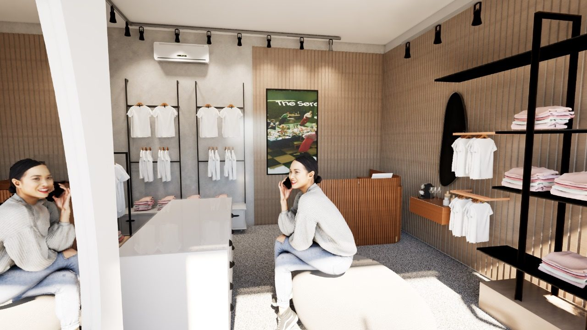
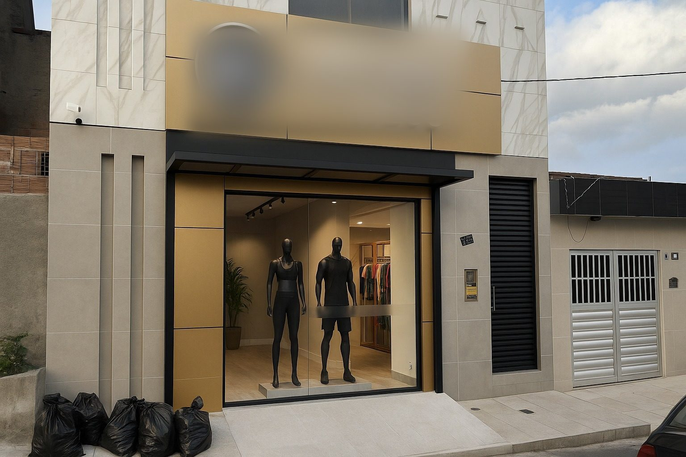
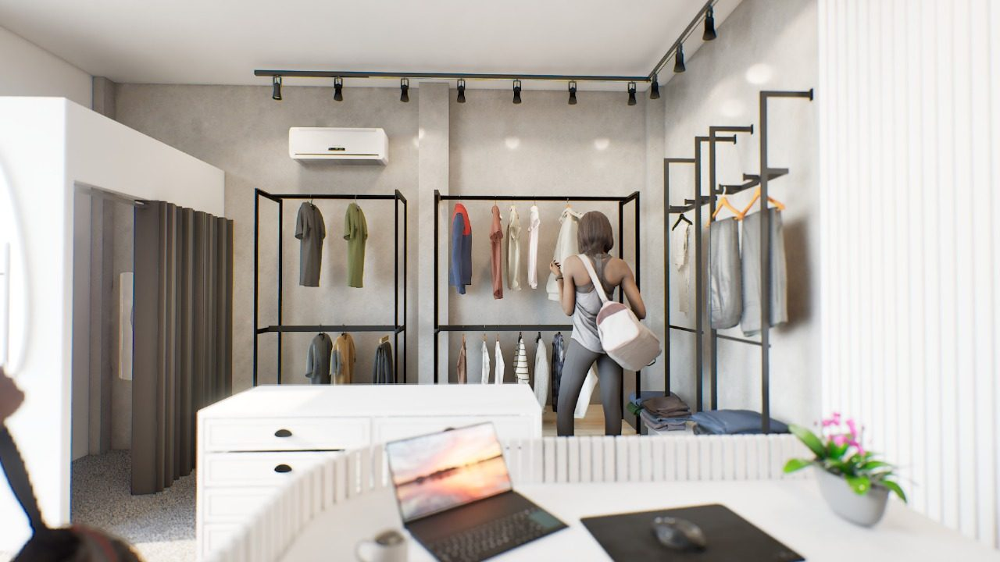
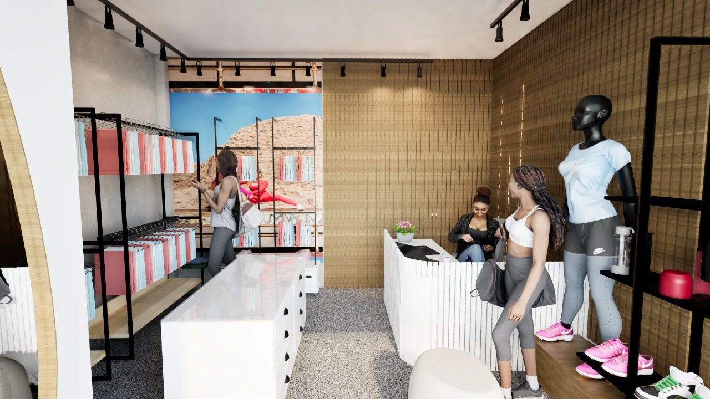

Área central
Ponto de pausa
Puff e console de dobrados no meio do trajeto fazem o cliente parar, olhar e considerar comprar.
Ajudo lojistas a transformar o espaço da loja em faturamento: layout, vitrine, zoneamento e iluminação pensados para o cliente comprar.
Checklist gratuito · 5 erros de layout que fazem sua loja perder vendaLoja que mais vende não é a mais bonita. É a desenhada pra conduzir o cliente do primeiro olhar até o caixa.
Por onde o cliente entra, pra onde olha primeiro e onde desiste.
Produto certo na zona quente, produto certo na zona fria.
Criar, de propósito, os lugares onde o cliente para e considera comprar.
Luz que guia o olhar até o produto certo, não só decora.
Conteúdo direto ao ponto para você aplicar na sua loja, sem depender de um projeto completo.

Loja fitness pequena onde cada metro foi pensado para conduzir o cliente: a vitrine domina a primeira impressão e o trajeto passa por todos os pontos de decisão antes do caixa.

Puff e console de dobrados no meio do trajeto fazem o cliente parar, olhar e considerar comprar.

O caminho até o provador passa pelas araras: o cliente vê o produto de novo antes de pagar.

Trilho de spots sobre o produto, ripado amadeirado e piso claro destacam o que importa.
Allan Porto · Arquiteto e Urbanista · CAU-PE A166156-6
Sou arquiteto especialista em Arquitetura Comercial e Retail Design. Antes de ensinar lojistas, estive do outro lado do balcão como diretor de expansão e novos negócios, respondendo pela conta no fim do mês, e como gestor de obras comerciais, colocando loja de pé com prazo e orçamento.
Foi nesse cruzamento entre projeto, obra e resultado que percebi o padrão: a loja que mais vende não é a mais bonita, é a que conduz o cliente. Hoje transformo essa experiência em métodos e materiais práticos para que lojistas corrijam o que está custando venda, sem depender de uma reforma grande.
Projetos comerciais, consultoria de layout e expansão de lojas. Me chame e conte o que está acontecendo no seu ponto de venda.